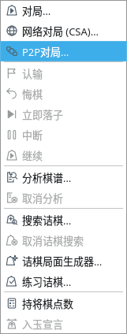
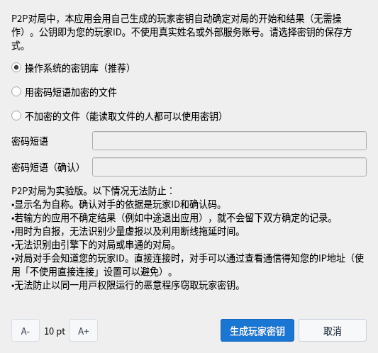
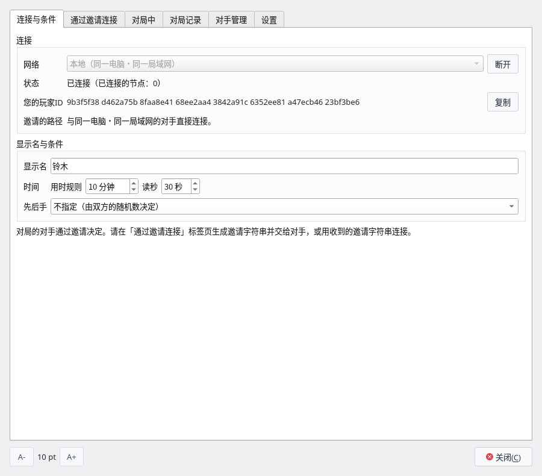
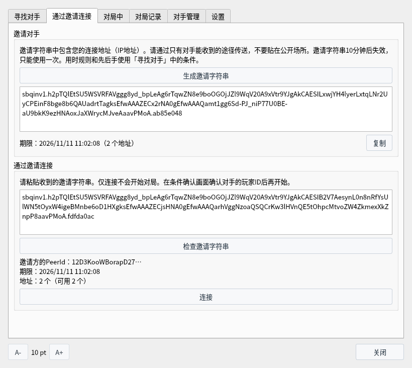
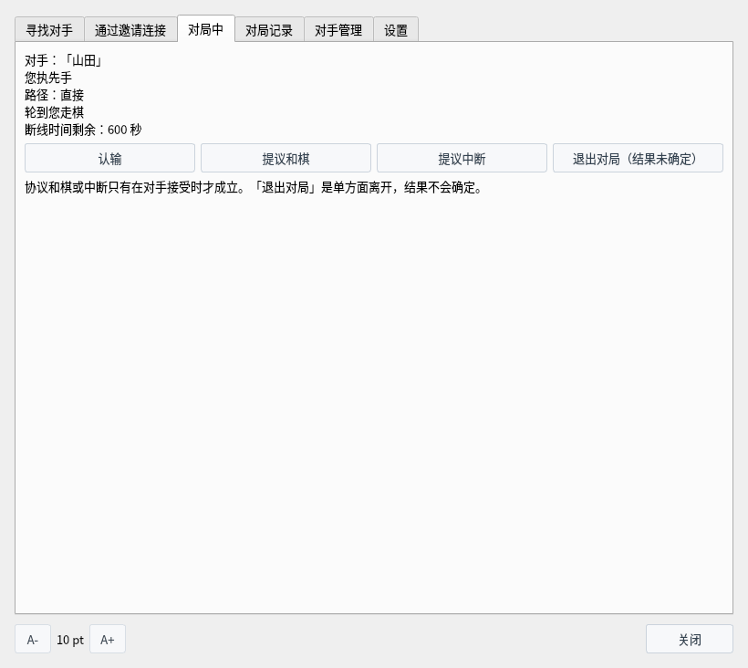
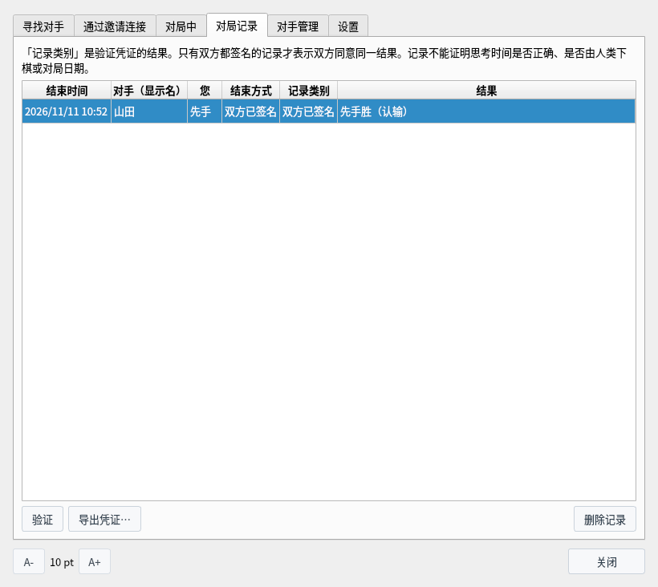
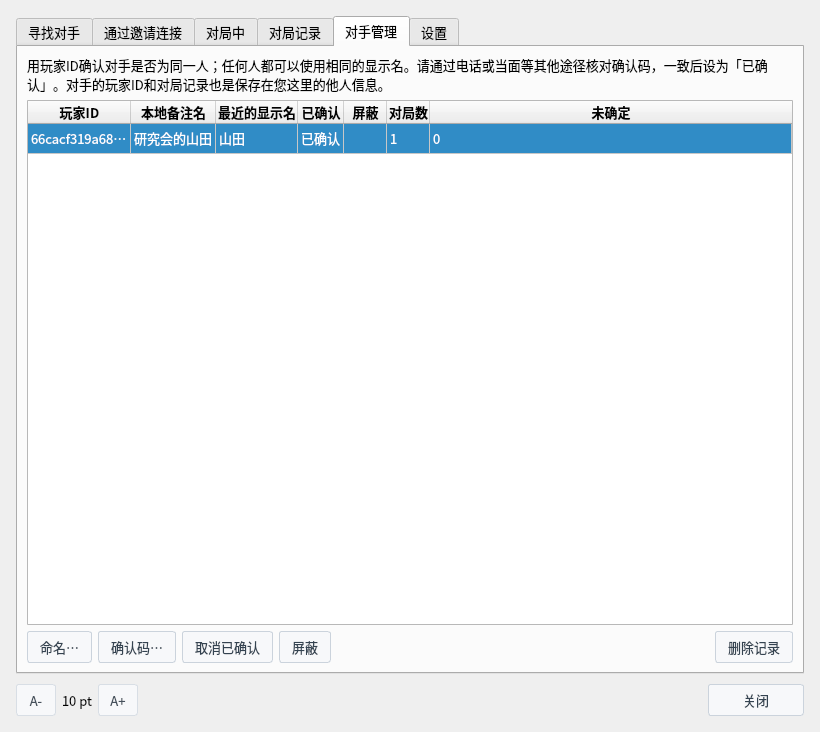
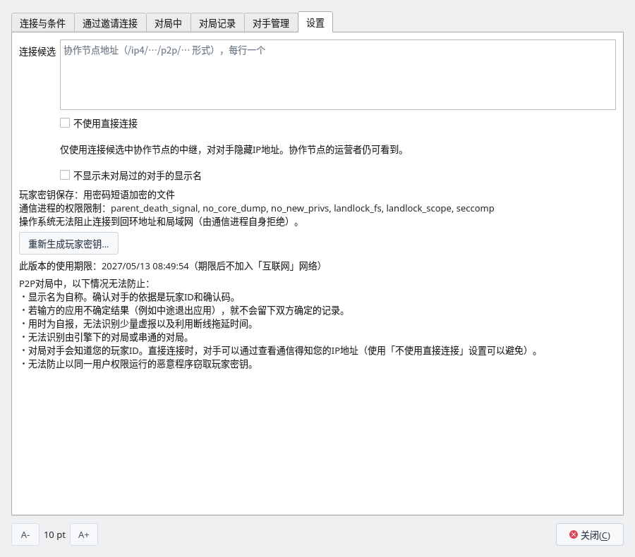
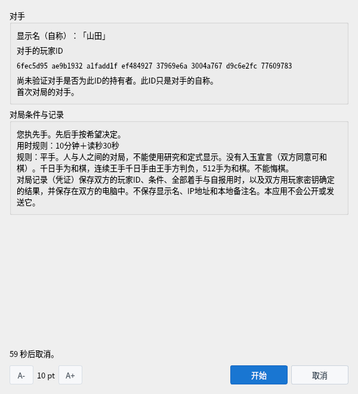
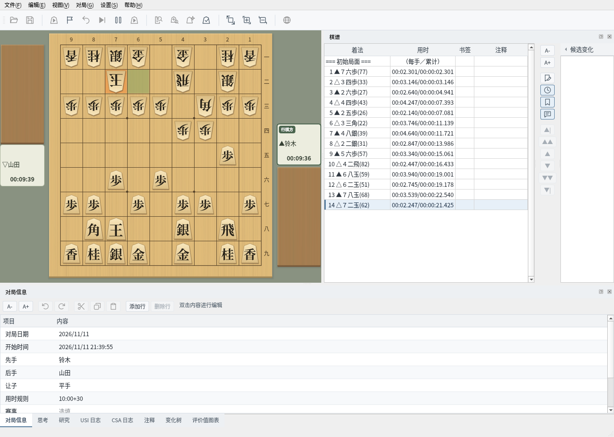

P2P对局（实验版）
不经过对局服务器，与对手直接连接下棋，并保存双方确定了开始与结果的对局记录
这是实验中的功能，画面和规则今后可能会改变。截图在 Linux 上以简体中文界面拍摄。
什么是P2P对局
仅启用P2P对局构建的将棋盘Q提供的实验中的对局功能
P2P对局不像CSA网络对局那样经过对局服务器，而是由自己和对手的应用直接连接下棋（无法直接连接时经过协作节点的中继，但协作节点不会成为对局服务器，见2）。对局的对手通过交给对方邀请字符串来决定。这是与熟人下棋的功能，没有寻找不特定对手的公开招募。
对局的开始和结果由双方的应用用本应用生成的玩家密钥自动确定（无需操作）。玩家密钥的公钥就是您的“玩家ID”。不使用真实姓名或外部服务的账号。对局结束后，双方已确定的对局记录（凭证）会保存在双方的电脑中，任何人都可以验证。
无法直接连接时，通信从自己的应用经过协作节点到达对手的应用。路径与CSA网络对局经过服务器时相似，但协作节点只是转交保持加密状态的通信。即使经过中继，对局的另一方仍是对手的应用，着手的确认和结果的确定都由双方的应用进行。
| 项目 | CSA网络对局的对局服务器 | P2P对局的协作节点（中继时） |
|---|---|---|
| 着手是否合法 | 由服务器判定 | 不判定。由双方的应用各自确认 |
| 用时 | 由服务器计时 | 不计时。用时由双方的应用自报，并与对方的应用测得的时间对照 |
| 胜负与终局 | 由服务器决定并通知 | 不决定。由双方的应用根据棋谱决定，并用玩家密钥确定 |
| 对局记录 | 服务器也可以保存 | 不保存。只保存在双方的应用中 |
| 通信内容 | 服务器接收着手并转发给对手 | 读不到。着手、玩家ID、显示名在双方的应用之间保持加密传送 |
| 对局的配对 | 由服务器配对 | 不配对。对手由邀请决定 |
协作节点的运营者能看到的是 IP 地址，以及哪些 IP 地址之间建立了连接（对手和网络可以看到的信息）。协作节点可以中断或延迟它中继的通信，但无法改写内容（改写过的通信会在加密的检查中被发现，应用不会接受）。通信中断时，与线路断开时一样处理（线路断开时）。
经过中继连接后，双方的应用仍会尝试切换为直接连接。切换后通信不再经过协作节点，“对局中”标签页的“路径”会变为“直接”。任意一方选择了“不使用直接连接”时不会切换，整局都经过中继。
P2P对局是两人下的一对一对局，一个应用同时只能有一局对局。无论是否使用协作节点都一样。协作节点只负责可达性确认和中继，不会安排对局的组合，也不会让一个应用同时下多局。
| 情况 | 不使用协作节点 | 使用协作节点 |
|---|---|---|
| 您邀请 7 个人 | 一次只能下一局。与最先连接的人对局，其他人会被“对手正在与他人协商或对局。”拒绝。要与 7 人都下，每局结束后把新的邀请字符串交给下一个人，逐个对局。 | 与不使用协作节点相同，一次只能下一局。 |
| 8 人同时下 4 局 | 4 组各由一方生成邀请字符串交给对方。在同一局域网中，各组分别连接，因此可以同时下 4 局（一台电脑上也最多可以运行 8 个应用）。 | 4 组各由一方邀请另一方。4 组都可以使用同一个协作节点（一个协作节点的中继同时最多 128 人）。 |
同时有效的邀请字符串最多 4 个，因此生成 7 个时，最早的 3 个会失效。没有把被邀请的人互相组合的功能（例如举办比赛），也没有观战功能。邀请的规则请参阅可以邀请的人数与次数。
P2P对局是实验中的功能，不包含在发布的 ShogiBoardQ 中。要使用时，从源代码构建时在 CMake 中加上 -DENABLE_P2P_PLAY=ON（需要 libsodium 和 Rust，构建步骤见Linux 构建与发布步骤）。
| 项目 | 规则 |
|---|---|
| 让子与对局者 | 仅限平手，人与人之间的对局。对局中不能使用研究、诘棋搜索、棋谱分析和定式显示。 |
| 用时规则 | 用时（分钟）和读秒（秒）。用时由双方自报，并与对方测得的时间对照。 |
| 先后手 | 按邀请方的希望决定；选择“不指定”时由双方的随机数决定。 |
| 终局 | 认输、将死、超时负、千日手（和棋）、连续王手千日手（王手方判负）、达到512手（和棋）、协议和棋、协议中断。 |
| 没有的规则 | 没有悔棋和入玉宣言（入玉时可以经双方同意判为和棋）。 |
两种对局方式
对手在哪里，决定了是否需要使用协作节点。各自的步骤在单独的页面中说明
不使用协作节点对局
与同一电脑・同一局域网的对手，只用邀请字符串连接下棋。既不需要协作节点，也不需要更改“设置”标签页。可以邀请的人数与次数、防火墙的设置也在这一页。
查看详情 →使用协作节点对局
通过协作节点与互联网上的对手下棋。由谁启动协作节点、启动方法，以及不让对手看到 IP 地址的设置也在这一页。
查看详情 →| 项目 | 不使用协作节点 | 使用协作节点 |
|---|---|---|
| 可以对局的对手 | 同一电脑・同一局域网的对手 | 互联网上的对手（另一个家庭、另一条线路） |
| “网络” | 本地验证用（同一电脑・同一局域网） | 限定测试用 |
| 协作节点 | 不需要 | 需要一个（由某人启动，双方都填入其地址） |
| “设置”标签页 | 无需更改 | 在“连接候选”中填入协作节点 |
| 邀请字符串中的地址 | 这台电脑在局域网内的地址（192.168.… 等） | 经由协作节点的地址（如果电脑可以从外部直接到达，还有互联网上的 IP 地址） |
| 对手能看到的地址 | 只有局域网内的地址 | 直接连接时为互联网上的 IP 地址（可用“不使用直接连接”隐藏） |
| 使用期限 | 没有 | 构建后 180 天 |
两个网络之间互不相通。对局的两人要选择相同的网络并连接。
准备
打开P2P对局窗口，生成玩家密钥并连接网络
从菜单栏的“对局”中选择“P2P对局（实验版）…”，会打开P2P对局窗口。窗口打开时也可以操作棋盘和棋谱。


“对局”菜单：用“P2P对局（实验版）…”打开窗口
在“连接与条件”标签页中选择“网络”，然后点击“连接”。第一次连接时会打开“准备P2P对局”。阅读下方列出的无法防止的情况后，选择密钥的保存方式，点击“生成玩家密钥”。
- 操作系统的密钥库（推荐）：保存在操作系统的密钥库（KWallet、GNOME 密钥环等）中。未使用 QtKeychain 构建时无法选择。
- 用密码短语加密的文件：保存在用由密码短语生成的密钥加密的文件中。启动应用后第一次连接时会询问密码短语。
- 不加密的文件：能读取或带走此电脑文件的人可以冒充您进行对局。
密钥文件保存在 ~/.local/share/ShogiBoardQ/p2p/identity。


首次连接时打开的“准备P2P对局”
连接后，“状态”会变为“已连接（已连接的节点：N）”，并显示“您的玩家ID”。在“显示名”中填入给对手看的名称。显示名为 1〜32 个字符，前后不能有空格，可以使用英文数字、符号、假名、汉字和全角英文数字。
“用时规则”“读秒”“先后手”会成为邀请时的对局条件。“邀请的路径”中会显示被邀请的对手通过哪条路径连接（直接连接，或经过协作节点的中继）。自己和对手的 IP 地址不会显示在画面上。
窗口的标签页
P2P对局窗口的6个标签页、各项目的说明，以及“设置”标签页各项目的使用场合
P2P对局窗口分为6个标签页。确定对手之前使用左边的两个，对局开始后使用“对局中”，结束后使用“对局记录”和“对手管理”。
| 标签页 | 用途 |
|---|---|
| 连接与条件 | 连接网络，并设定给对手看的显示名，以及邀请时的用时规则和先后手。 |
| 通过邀请连接 | 生成邀请字符串交给对手，或用收到的邀请字符串连接对手。 |
| 对局中 | 查看对局状况，认输，或提议和棋、中断。 |
| 对局记录 | 查看已结束对局的记录（凭证），并进行验证、导出和删除。 |
| 对手管理 | 为对局过的对手命名，用确认码确认是否为同一个人，以及屏蔽。 |
| 设置 | 协作节点的地址、不让对手看到 IP 地址的设置，以及重新生成玩家密钥。同一电脑・同一局域网内的对局都不需要这些设置。 |
窗口下方的“A-”“A+”用于改变文字大小（下次打开时保持相同大小）。点击“关闭”关闭窗口后，连接和对局仍会继续。要再次打开，请选择“对局”→“P2P对局（实验版）…”；要断开连接，请点击“连接与条件”标签页的“断开”。
在上方的“连接”中连接网络，在下方的“显示名与条件”中设定给对手看的名称，以及自己邀请时的对局条件。


“连接与条件”标签页：连接后
| 项目 | 说明 |
|---|---|
| 网络 | 要加入的网络。“本地验证用（同一电脑・同一局域网）”可与同一电脑和同一局域网的对手连接，“限定测试用”可与互联网上的对手连接（限定测试用需要协作节点）。连接期间无法更改。 |
| 连接／断开 | 连接所选的网络。第一次连接时会打开生成玩家密钥的画面。连接后按钮变为“断开”，点击后会使有效的邀请失效并断开连接。确认条件期间和对局中无法点击。 |
| 状态 | 显示“未连接”“正在连接…”“已连接（已连接的节点：N）”之一。N 是当前已连接的对象（协作节点和对局对手）的数量。无法启动负责通信的进程时，显示“无法使用P2P对局”。 |
| 您的玩家ID | 玩家密钥的公钥（64 位十六进制数），是对手用来识别您的值。点击“复制”可复制。生成密钥之前显示“（尚未生成）”。 |
| 邀请的路径 | 连接期间，显示被邀请的对手会通过哪条路径连接过来（直接，或经协作节点中继）。尚无外部可到达的连接地址时，会显示相应提示。不会显示 IP 地址。 |
| 显示名 | 给对手看的名称（1～32 个字符）。会显示在条件确认画面、对局信息和对手的“对局记录”标签页中，但不会保留在凭证里。 |
| 时间 | 自己邀请时的“用时规则”（0～1440 分钟）和“读秒”（0～600 秒）。两者不能同时为 0。 |
| 先后手 | 自己邀请时对先后手的希望。从“不指定（由双方的随机数决定）”“希望先手”“希望后手”中选择。 |
用时规则和先后手使用邀请方的条件。被邀请方在条件确认画面确认后再开始。
上方的“邀请对手”供邀请方使用，下方的“通过邀请连接”供被邀请方使用。两者都只能在连接期间使用。步骤请参阅不使用协作节点对局和使用协作节点对局。


“通过邀请连接”标签页：生成邀请字符串（上）・用收到的邀请字符串连接（下）
| 项目 | 说明 |
|---|---|
| 生成邀请字符串 | 生成邀请字符串并显示在下方的输入框中。输入框下方显示期限和对手可用的连接地址数量。邀请字符串 10 分钟后失效，并且只能使用一次。同时有效的最多 4 个（可以邀请的人数与次数）。 |
| 复制 | 复制生成的邀请字符串。请用只有对方能收到的方式交给对方。 |
| 通过邀请连接（输入框） | 粘贴收到的邀请字符串。 |
| 检查邀请字符串 | 读取粘贴的邀请字符串，并在下方显示邀请方的 PeerId（开头部分）、期限和地址数量。 |
| 允许连接上方的私有地址（同一局域网的对手） | 仅在“限定测试用”中，邀请字符串含有私有地址（同一局域网内的地址）时显示。允许连接这些地址时请勾选。 |
| 连接 | 连接已检查的邀请字符串的对手。连接成功后，双方都会打开条件确认画面。仅连接并不会开始对局。 |
对局开始后会自动切换到此标签页。走棋在主窗口的棋盘上进行，此标签页用于查看状况、认输和提出提议。没有对局时显示“没有进行中的对局。”


“对局中”标签页
| 显示 | 含义 |
|---|---|
| 对手 | 对手的显示名。 |
| 您执先手／您执后手 | 本局中自己的先后手。 |
| 路径 | “直接”表示与对手直接连接，“中继”表示经过协作节点的中继。 |
| 轮到您走棋／轮到对手走棋 | 轮到谁走棋。对手的应用确认您的着手期间显示“正在等待着手确认…”，线路中断时显示“正在重新连接（剩余 N 秒）”，终局后核对结果期间显示“正在确定结果…”。 |
| 断线时间剩余 | 本局中线路还可以中断多久（从 600 秒开始减少）。变为 0 时对局中断。 |
| 结果 | 结果确定后，会显示“先手胜（认输）”之类的内容。 |
- 认输：只能在轮到自己走棋时点击。确认后判负。
- 提议和棋・提议中断：询问对手是否接受。只有对手接受时才成立。
- 退出对局（结果未确定）：单方面离开对局。结果不会确定。
已结束的对局每局一行排列。选中一行后点击下方的按钮。类别的含义和验证的内容请参阅对局记录与验证。


“对局记录”标签页：双方已确定的记录
| 列・按钮 | 说明 |
|---|---|
| 结束时间 | 对局结束的日期和时间。 |
| 对手（显示名） | 对手使用的显示名。如果在“对手管理”中命名过，还会显示本地备注名。 |
| 您 | 自己的先后手（先手・后手）。 |
| 结束方式 | 在自己的应用中结束的方式（双方已确定、无对手确定、中断（结果未确定）、通信中断（结果未确定）等）。 |
| 记录类别 | 验证凭证的结果（双方已确定、由棋谱决定的结果、结果未确定）。凭证损坏时显示“验证失败”或“无法读取”。 |
| 结果 | “先手胜（认输）”之类的胜负和结束方式。 |
| 验证 | 验证所选的记录，显示玩家密钥的确定是否正确、棋谱是否符合规则等。 |
| 导出凭证… | 把凭证文件（.sbqmatch）保存到任意位置。凭证中包含双方的玩家ID。 |
| 删除记录 | 删除所选对局的凭证和记录（无法恢复）。 |
对局过的对手按玩家ID每人一行排列。任何人都可以使用相同的显示名，因此请用玩家ID判断是否为同一个人。选中一行后点击下方的按钮。


“对手管理”标签页：已命名并用确认码设为已确认的对手
| 列・按钮 | 说明 |
|---|---|
| 玩家ID | 对手的玩家ID。请用这个值判断是否为同一个人。 |
| 本地备注名 | 用“命名…”设定的名称。不会显示给对手，也不写入棋谱。 |
| 最近的显示名 | 对手在最近一次对局中使用的显示名。 |
| 已确认 | 用确认码核对并点击“设为已确认”的对手会显示“已确认”。 |
| 屏蔽 | 已屏蔽的对手会显示“已屏蔽”。 |
| 对局数・未确定 | 与该对手的对局数量，以及其中结果未确定的对局数量。 |
| 命名… | 设定本地备注名。会显示在条件确认画面和“对局记录”标签页中。 |
| 确认码… | 显示由双方玩家ID生成的 30 位数字。请通过电话或当面等其他途径与对手核对。 |
| 设为已确认／取消已确认 | 把确认码一致的对手设为已确认。再次点击可取消。 |
| 屏蔽／解除屏蔽 | 即使该对手通过邀请连接也会拒绝。对方会被告知您正在与他人协商或对局。再次点击可解除。 |
| 删除记录 | 删除该对手的名称、已确认、屏蔽和对局数的记录。 |
任何人都可以免费重新生成玩家密钥，因此屏蔽和过去的成绩可以通过重新生成来规避。
如果只在同一电脑・同一局域网内对局，这个标签页的项目都不需要更改。“连接候选”和“不使用直接连接”用于通过互联网对局（使用协作节点对局）。“不显示未对局过的对手的显示名”以及玩家密钥、使用期限，见下面的8・9。
输入框和复选框在更改时保存。“连接候选”和“不使用直接连接”从下次连接时开始生效（已连接时，请断开后重新连接）。


“设置”标签页
| 项目 | 说明 |
|---|---|
| 连接候选 | 每行填入一个协作节点地址（/ip4/…/p2p/… 形式），最多 16 个。只使用“本地验证用”时可以留空（协作节点的准备见由谁启动协作节点）。 |
| 不使用直接连接 | 仅通过“连接候选”中协作节点的中继，不让对手看到 IP 地址。协作节点的运营者仍可看到（不让对手看到 IP 地址对局）。 |
| 不显示未对局过的对手的显示名 | 在条件确认画面和“对局记录”标签页中，把首次对局对手的显示名显示为“名称已隐藏”。 |
| 玩家密钥保存 | 当前玩家密钥的保存方式（操作系统的密钥库、用密码短语加密的文件、不加密的文件）。连接期间还会显示对负责通信的进程施加的权限限制。 |
| 重新生成玩家密钥… | 生成新的玩家密钥。玩家ID会改变，对手会把您看作另一个人。旧密钥将被删除。请断开连接后再点击。 |
| 此版本的使用期限 | 过了这个日期后，不再加入“限定测试用”网络。 |
最下方列出P2P对局无法防止的情况（无法防止的情况与对方可以看到的信息）。
显示名是对手可以自由设定的名称。邀请字符串在 10 分钟的期限内，任何看到的人都可以使用。邀请字符串被他人看到时，可能会有陌生人连接过来。陌生人的显示名中可能含有令人不快的词语，或与画面提示容易混淆的文字。
启用此设置后，未对局过的对手（未列在“对手管理”中的对手）的显示名，在条件确认画面显示为“显示名：已隐藏”，在“对局记录”标签页显示为“名称已隐藏”。请通过玩家ID和“首次对局的对手。”的提示确认对手，如果没有印象，请点击“取消”。
- 对局过的对手（列在“对手管理”中的对手）的显示名，在此设置下仍会显示。在“对手管理”中“删除记录”的对手，会再次被视为未对局过的对手。
- 对局开始后，棋盘上的对局者名、对局信息和“对局中”标签页会显示对手的显示名。此设置的作用是让您在开始前不看到陌生人的名称就能取消。
- 只和熟人对局时，可以不更改。两种网络都可以使用。
玩家密钥保存只显示当前密钥的保存方式，以及连接期间对通信进程施加的权限限制（Landlock、seccomp 等），不能在这里更改。
重新生成玩家密钥…在以下情况下使用。
- 密钥文件或密码短语可能被他人得知时（持有该密钥的人可以冒充您对局）
- 想更改密钥的保存方式时（重新生成时重新选择保存方式）
- 想用与过去对局无关的新玩家ID对局时
重新生成后玩家ID会改变，在对手的“对手管理”中您会显示为另一个人（首次对局的对手）。确认码也会改变，请让曾把您设为已确认的对手再核对一次。旧密钥会被删除，无法恢复原来的玩家ID。过去的对局记录（凭证）不会被删除，仍保留旧的玩家ID。点击前，请在“连接与条件”标签页断开连接。
此版本的使用期限是构建日起 180 天后的日期。P2P对局没有可以停止旧版本的服务器。为了不让未修复缺陷或安全漏洞的旧版本一直留在互联网上的网络中，过期的版本不再加入“限定测试用”。过期后，请重新构建新版本。“本地验证用”的对局，以及查看和验证已保存的记录，过期后仍可使用。
条件确认画面
开始对局前确认对手和条件
用邀请字符串连接后，双方都会打开“确认P2P对局条件”。“对手”中会完整显示对手的显示名（自称）和玩家ID。判断是否为同一个人时，请看玩家ID，而不是显示名。
| 显示 | 含义 |
|---|---|
| 尚未验证对手是否为此ID的持有者。此ID只是对手的自称。 | 开始手续尚在进行中，玩家ID只是对手报上的值。 |
| 已验证对手持有此ID的密钥。 | 对手的应用已用此ID的密钥确定了开始。 |
| 已确认的对手（已用确认码核对）。 | 在“对手管理”中设为已确认的对手。也会显示您设定的本地备注名。 |
| 首次对局的对手。／与此对手的对局：N局 | 以往的对局数，以及其中结果未确定的对局数。 |
| 与您命名为「…」的对手显示名相同，但玩家ID不同。 | 以红字显示。可能是与您命名的对手不同的人。 |
“对局条件与记录”中会显示先后手及其决定方式、用时规则、规则以及对局记录中保存的内容。没有问题就点击“开始”。双方都点击“开始”后对局开始。点击“取消”，或 60 秒内双方没有都开始，就会取消（剩余秒数显示在下方）。


条件确认画面（验证对手之前）
对局中
在主窗口的棋盘上走棋，在“对局中”标签页中认输或提出提议
对局开始后，使用主窗口的棋盘、棋谱和对局时钟。“对局信息”中会填入双方的显示名和对局ID。执后手时，棋盘会自动翻转，从自己一方观看。
您走的棋要等对手的应用收到并确认后才会落在棋盘上（期间显示“正在等待着手确认…”）。不能悔棋。


对局中的主窗口（到第14手）
“对局中”标签页中会显示对手、先后手、路径（直接或中继）、轮到谁走以及断线时间剩余。
- 认输：轮到自己走棋时可以点击。
- 提议和棋・提议中断：询问对手是否接受。只有对手接受时，才成为协议和棋或协议中断。被拒绝时对局继续。
- 退出对局（结果未确定）：单方面离开对局。结果不会确定，对手会收到中断通知。
因认输、将死、超时负等终局后，双方的应用会对照结果（胜负、结束方式和手数），一致时自动用玩家密钥确定。无需操作（期间“对局中”标签页显示“正在确定结果…”）。双方都确定后，记录成为“双方已确定”。若 30 秒内没有收到对手的确定，则保存为“无对手确定”。
线路断开时，应用会自动重新连接（显示“正在重新连接（剩余 N 秒）”）。断线期间轮到走棋一方的时钟继续计时，轮到走棋的一方仍可走一步棋（恢复连接后发送）。
120 秒内无法恢复连接时，对局以“通信中断（结果未确定）”结束。一局的断线时间总计超过 10 分钟时也会中断。由于无法区分自己线路的故障和对手的故意断线，断线不会被视为对手输棋。
应用或通信进程退出、电脑进入睡眠时，无法回到同一局对局（结果未确定）。
对局记录与验证
已结束对局的记录（凭证）保存在双方的电脑中，任何人都可以验证
已结束的对局会列在“对局记录”标签页中。“结束方式”是在自己的应用中结束的方式，“记录类别”是验证凭证的结果。
| 记录类别 | 含义 |
|---|---|
| 双方已确定 | 双方的玩家密钥都确定了同一结果。只有这个类别能表明双方同意了同一结果。 |
| 由棋谱决定的结果 | 结果的确定不齐全，但到双方的应用都已验证的最后局面为止的棋谱已决定了将死、千日手、连续王手千日手或达到512手。 |
| 结果未确定 | 两者都不是。例如认输或超时负之后没有收到对手的确定，或对局被中断时。 |
凭证保存在 ~/.local/share/ShogiBoardQ/p2p/evidence。对局中应用退出时，到那时为止的记录会在下次打开时作为“结果未确定”的记录保留。
点击“验证”，会显示玩家密钥的确定是否正确、棋谱是否符合规则、自报用时的计算是否一致、结果是否由棋谱决定，以及记录类别。用“导出凭证…”可以把凭证文件（.sbqmatch）保存到任意位置。“删除记录”会删除本地的凭证（无法恢复）。
记录不能证明实际思考时间、是否由人类下棋以及对局日期。
也可以不启动 GUI，用 shogiboardq-cli 的 verify-match 验证凭证文件。结果以 JSON 输出（下面的示例经过整理以便阅读，并省略了较长的 ID）。
$ shogiboardq-cli verify-match --input-path ~/game.sbqmatch
{
"black_player_id": "4b8788e2…",
"byoyomi_ms": 30000,
"category": "mutually_signed",
"checks": {
"clock_arithmetic": true,
"conditions_match": true,
"record_legal": true,
"result_conflicts_with_record": false,
"result_refers_to_record": true,
"signatures": true,
"start_signatures": true
},
"game_id": "c62a566e…",
"last_confirmed_ply": 15,
"main_time_ms": 600000,
"network": "sbq-local-1",
"network_id": "83cc9dfd…",
"not_verifiable": [
"actual_thinking_time",
"human_play",
"date_played"
],
"ok": true,
"result": {
"black_signed": true,
"cause": "resign",
"outcome": "black_wins",
"ply": 15,
"result_digest": "a6cec2cd…",
"white_signed": true
},
"states": 16,
"valid": true,
"white_player_id": "8a3569db…"
}valid 为 true 表示玩家密钥的确定和记录的结构正确，category 是记录类别（mutually_signed 为“双方已确定”，determined_by_record 为“由棋谱决定的结果”，unconfirmed 为“结果未确定”）。not_verifiable 列出从此记录无法确认的内容（实际思考时间、是否由人类下棋、对局日期）。
无法防止的情况与对方可以看到的信息
使用实验版P2P对局前请先了解
- 显示名：显示名为自称。确认对手的依据是玩家ID和确认码。
- 确定结果：若输方的应用不确定结果（例如中途退出应用、断开连接或使用改造过的应用），就不会留下双方确定的记录。
- 用时：用时为自报。无法识别每步最多 10 秒的虚报，以及利用断线拖延时间（每局合计最多 10 分钟）。
- 引擎与串通：无法识别由引擎下的对局或串通的对局。双方也可以串通确定虚构的结果。
- 玩家密钥：无法防止以同一用户权限运行的恶意程序窃取玩家密钥。
请不要把记录的胜局数作为正式等级分或棋力的依据。
| 谁 | 可以看到的内容 |
|---|---|
| 对局对手 | 玩家ID、显示名、条件。直接连接时，对手查看通信还能得知 IP 地址（画面上不显示）。设置“不使用直接连接”后无法得知 |
| 看到邀请字符串的人 | 连接到邀请方的地址（使用直接连接的设置时包含 IP 地址。在“本地验证用（同一电脑・同一局域网）”中，包含这台电脑在局域网内的全部地址，也包括 VPN 和虚拟设备的地址） |
| 协作节点的运营者 | IP 地址，以及哪些 IP 地址之间建立了连接。确认可达性时，只请协作节点确认它看到的你的地址，不发送局域网内的地址。看不到着手、玩家ID 和显示名 |
| 同一局域网内的设备 | 以“本地验证用（同一电脑・同一局域网）”连接期间，能得知这台电脑正在运行 P2P 对局（连接到监听端口即可知道）。没有邀请字符串时，看不到这台电脑的地址列表，也看不到对局 |
| 收到对局记录（凭证）的人 | 双方的玩家ID、条件、对局开始的大致日期和时间、全部着手与自报用时、双方确定的结果。不保存显示名、IP 地址和本地备注名 |
本应用不会公开对局记录，也不会把它发送到任何地方。